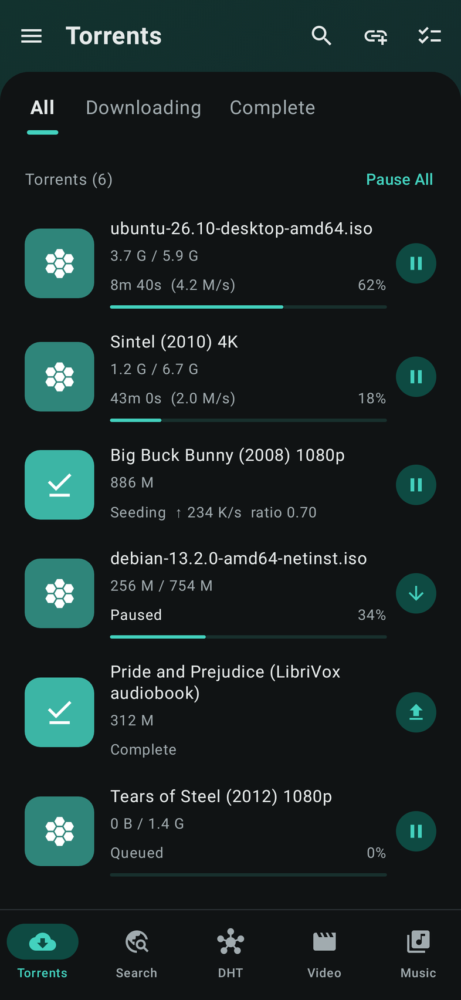
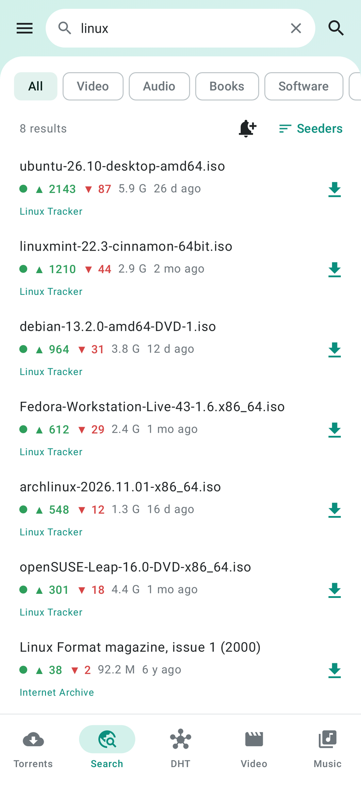
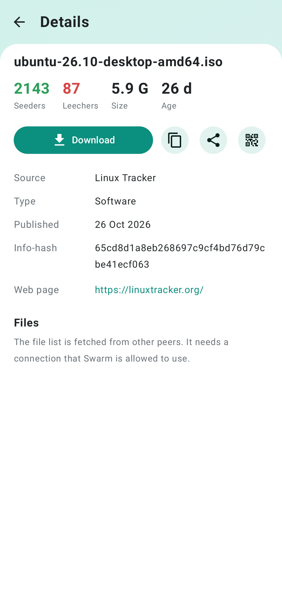
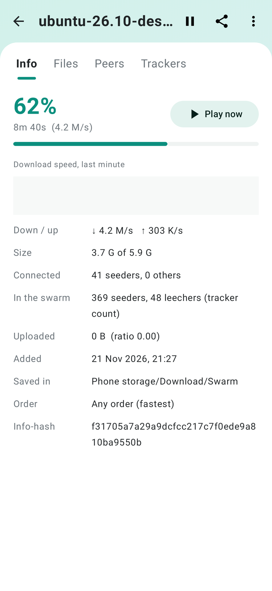
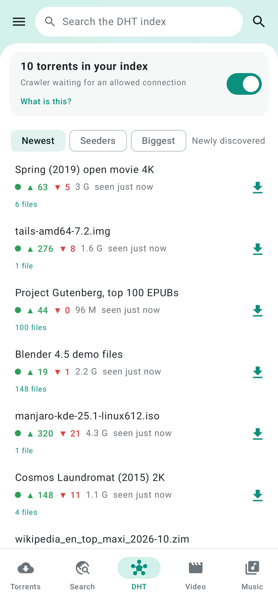
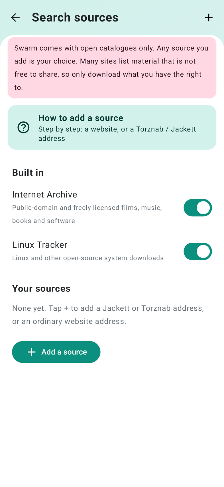
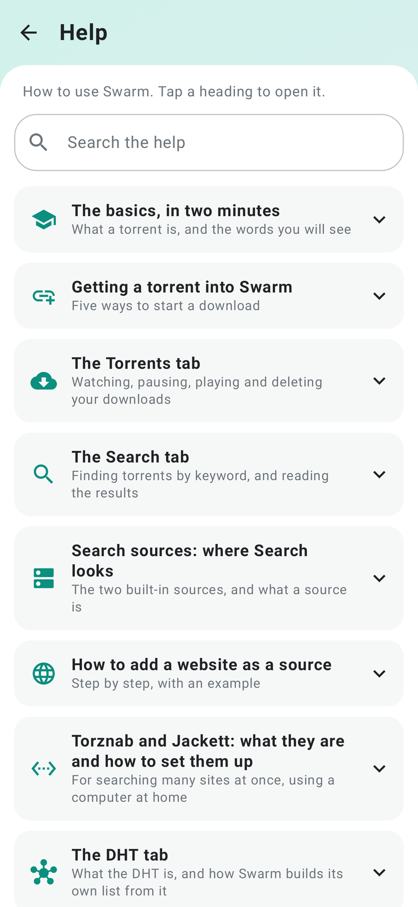
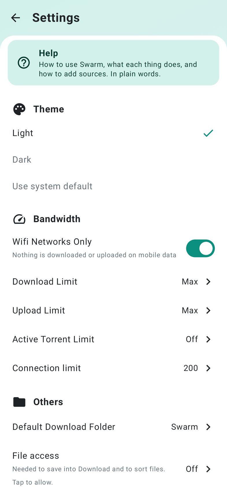

A torrent app that finds the torrents too.
Swarm is a torrent app for Android with search built in. Type a few words, see how many people are sharing each result, how big it is and how old, and tap Download. It goes straight into your list.
It is free, with no paid version and no adverts. The code for this version is public.
Swarm can fetch things other people own. What the law says
- Version 1.3
- Android 10 or later, 64-bit
- 61 MB
Free, with nothing to unlock. No adverts, no account with the developer, no tracking. Compare or read the release notes.
Chrome may say the file might be harmful. It shows this for app files that do not come from Google Play. Choose Download anyway.

- No subscriptionNo paid version and nothing to unlock.
- No advertsNone in the app and none on this site.
- Search built inSeeders, size and age before you tap.
- Open sourceThe code for this version is public.
A look inside
These are the real screens, drawn from the app's own code with freely shared films, books and Linux downloads. Swipe or scroll sideways to see them all.







How it works
A torrent is a file shared by many people at once, each sending a piece. Swarm finds them, fetches the pieces and puts the file together.
Search
Type a few words. Swarm asks its sources and shows seeders, size and age for each result.
Download
Tap Download. The file goes into your list and is sorted into Movies, Music, Books or Download when it is done.
Watch or listen
Play a video while it is still downloading, or open it from the Video and Music tabs.
Everything is in, and all of it is free
Nothing below is held back for a paid tier, because there is no paid tier.
Finding
- Search built in
- The Internet Archive and Linux Tracker out of the box, with your own Torznab or Jackett sources if you add them.
- The DHT tab
- Swarm quietly learns which torrents exist on the DHT network and builds a searchable index on your phone.
- Magnets, files and QR codes
- Open a magnet link or a .torrent file from anywhere, or scan one.
Downloading
- A full torrent client
- Choose files, set the order, pause and resume, limit speed and connections, seed to a ratio.
- Wi-Fi only if you like
- Nothing downloaded or uploaded on mobile data unless you say so.
- Keeps going
- Downloads carry on in the background, with a home-screen widget.
Playing
- Video and music tabs
- What you downloaded, with thumbnails and a New badge.
- Play while downloading
- A built-in player with subtitles, audio-track choice, speed and picture-in-picture.
No account, no tracking
No servers of its own
Swarm has no accounts and no servers. The developer receives nothing from the app.
Torrents are public
Other people in a torrent can see your IP address. Use a VPN if that matters to you.
No ads, no tracking
There is no advertising, analytics or tracking, in the app or on this site.
Use it within the law
Torrents are a fair way to share free software, public-domain films and books, and anything offered under an open licence. Sharing other people's films, music, games or books without permission is not. Download only what you have the right to, and remember that a torrent uploads to others while it downloads.
- Copyright, Designs and Patents Act 1988. Copying or sharing a film, recording, game or book without the owner's permission can infringe copyright. Making copies available to the public can be a criminal offence.
- Digital Economy Act 2017. Raised the maximum penalty for online copyright infringement to ten years in prison.
- Computer Misuse Act 1990. Files from unknown sources can carry harmful software. Never run programs you do not trust.
- Your internet provider's terms. Providers can warn or cut off customers who share copyrighted material.
Laws differ in other countries. If you are not in the UK, the rules where you are apply. Read the terms of use.
Installing and updating
Swarm is not on Google Play, so your phone asks a couple of extra questions the first time.
Download the app file
Tap Download on your phone. The file is called Swarm.apk and is about 61 MB. If Chrome says the file might be harmful, choose Download anyway. First tick the box to say you will use the app within the law.
Allow the install
Open the file. The first time, Android asks you to allow your browser to install apps. Allow it, go back and tap Install. If Google Play Protect steps in, choose More details, then Install anyway.
Updating later
Swarm tells you when a newer version is out. Install the new file over the old one and everything you have saved is kept.
Version 1.3, released 17 November 2026. See the release notes, or check your download.
Questions
Is Swarm really free?
Yes. There is no paid version, no subscription and no adverts, and nothing in the app is locked. It is also open source. See the comparison.
Is Swarm on Google Play?
No. Swarm is a personal project and is downloaded from this site as an Android app file. It needs Android 10 or later on a 64-bit phone, which covers almost every phone sold in recent years.
What is a torrent?
A torrent is a file, or a set of files, shared among the people downloading it. Each of them fetches pieces from the others and passes pieces on, so there is no single server to slow down or go offline. A magnet link is a short address for a torrent.
Where does the search look?
In the sources you have switched on. Two are built in: the Internet Archive, for public-domain and freely licensed films, music, books and software, and Linux Tracker, for Linux and other open-source system downloads. You can add your own: a Torznab address from Jackett or Prowlarr, or the address of a website's search results page.
What is the DHT tab?
The DHT is the network torrent apps use to find each other without a central server. It has no search of its own. Swarm listens to it, collects the names and file lists of the torrents it hears about, and keeps them in an index on your phone that you can search. The index starts empty and grows while Swarm is open and, unless you change it, while the phone is charging on Wi-Fi.
Am I allowed to download a torrent?
That depends on what is in it. Download and share only what you have the right to: work in the public domain, work its owner offers freely or under an open licence, or your own. The DHT index and any source you add can list material that is not free to share, and Swarm cannot tell which is which. That judgement is yours. The detail is in the terms.
Can other people see what I download?
Other people sharing the same torrent can see your internet address. That is how BitTorrent works, in every torrent app. Swarm warns you when no VPN is on, and can be set to stop all torrent traffic without one. Its encryption setting hides torrent traffic from simple network filters, but it does not hide your address.
Does Swarm upload as well as download?
Yes. While a torrent downloads, the pieces you already have are passed on to others. After it finishes, Swarm carries on until it has given back as much as it took, on Wi-Fi only, then stops. You can set it to stop the moment a download finishes, or to keep going until you pause it.
Will it use my mobile data?
Not unless you let it. Wi-Fi only is switched on when you install Swarm, so nothing is downloaded or uploaded on mobile data until you turn that off.
Where do the files go?
Into a Swarm folder inside your phone's Download folder. When a download finishes it is sorted into Movies, TV, Music, Books or Other. This needs the file access Swarm asks for when you first open it. Without it, downloads are kept in the app's own folder.
Why is the download so large?
The file is about 61 MB because Swarm carries its whole torrent engine with it, along with decoders for the sound formats that phones do not play by themselves.
How do I update Swarm?
Swarm tells you on the Torrents tab when a newer version is on this site. Download it and install it over the one you have. Your torrents, index, sources and settings are kept.
Find it, fetch it, play it
Free, with no adverts and nothing to unlock. Made by the developer of several other free Android apps: see them all.